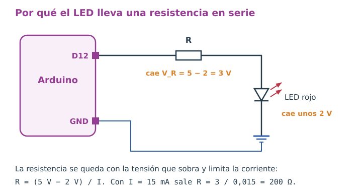
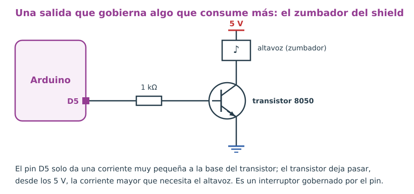
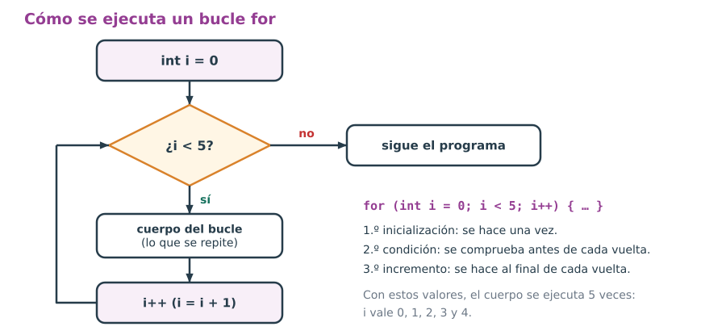
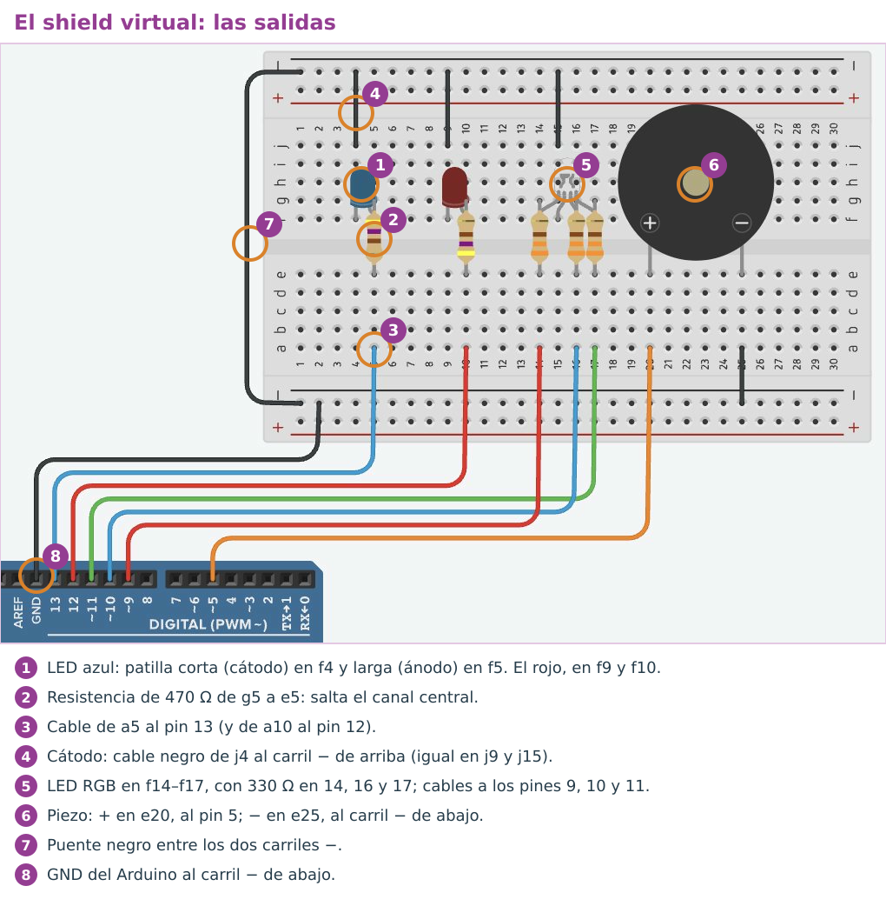
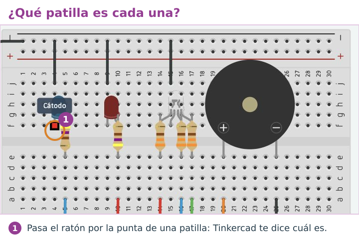
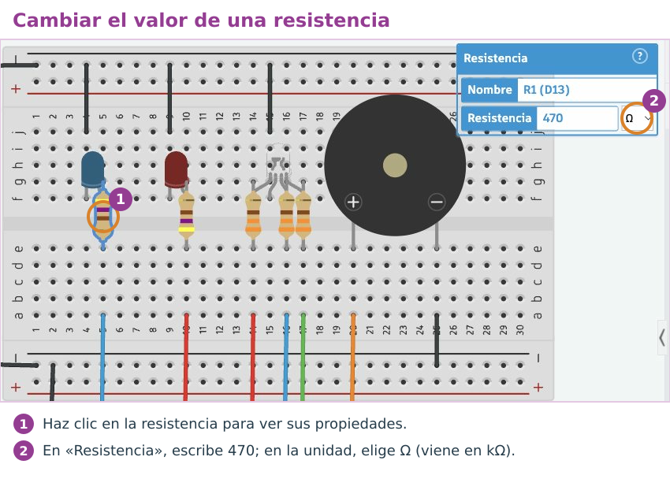
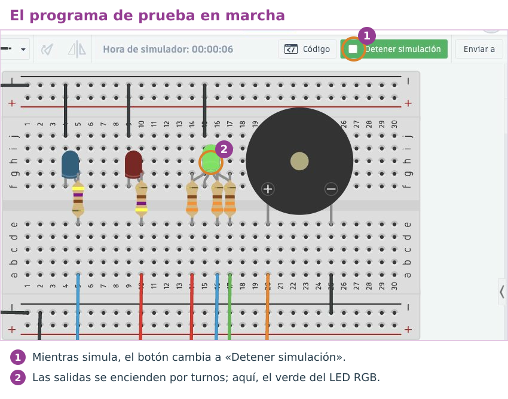
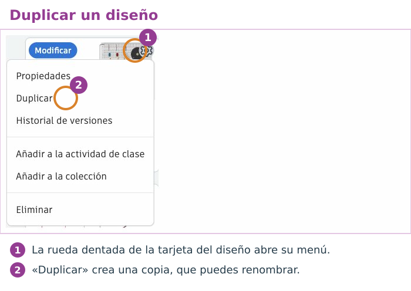
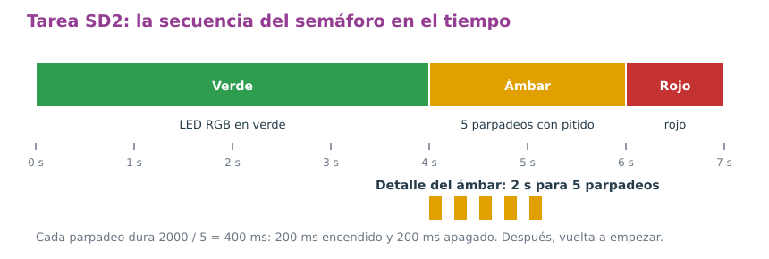

Qué vas a conseguir en esta página
Gobernar varias salidas digitales a la vez, saber cuánta corriente puede dar un pin y cómo se controla algo que necesita más, y repetir instrucciones un número exacto de veces con el bucle for.
Las salidas digitales
Un pin configurado como salida (pinMode(pin, OUTPUT)) solo puede estar en dos estados: HIGH, con 5 V, o LOW, con 0 V. Es una señal digital: no hay término medio. Con digitalWrite(pin, HIGH) o digitalWrite(pin, LOW) cambias el estado cuando quieras.
Si quieres que varias salidas cambien «a la vez», escribe un digitalWrite detrás de otro: el microcontrolador ejecuta millones de instrucciones por segundo, así que para ti es instantáneo.
Ejemplo: los dos LED del shield se encienden por turnos
// Los dos LED del shield se encienden por turnos
const int LED_ROJO = 12;
const int LED_AZUL = 13;
const int ESPERA = 500; // medio segundo
void setup() {
pinMode(LED_ROJO, OUTPUT);
pinMode(LED_AZUL, OUTPUT);
}
void loop() {
digitalWrite(LED_ROJO, HIGH); // turno del rojo
digitalWrite(LED_AZUL, LOW);
delay(ESPERA);
digitalWrite(LED_ROJO, LOW); // turno del azul
digitalWrite(LED_AZUL, HIGH);
delay(ESPERA);
}Cuánta corriente puede dar un pin
Un pin de Arduino no es una fuente de energía ilimitada. El fabricante del microcontrolador fija un máximo absoluto de 40 mA por pin y de 200 mA entre todos. Para trabajar con margen, no pases de unos 20 mA por pin. Si se supera, el chip se calienta y puede estropearse.
Por eso un LED nunca se conecta directamente a un pin: lleva una resistencia en serie que limita la corriente. Lo calculas con la ley de Ohm que ya conoces:

\[R=\frac{V_{pin}-V_{LED}}{I}\]
En el shield, los LED rojo y azul llevan resistencias de 470 Ω, y los tres del LED RGB, de 330 Ω.
Ahora tú: la corriente de los LED del shield
No se entrega ni cuenta para la nota: sirve para comprobar si lo has entendido.
Calcula la corriente que circula por el LED rojo del shield cuando el pin 12 está a HIGH. Toma 2 V como tensión del LED. ¿Está dentro del límite recomendado?
Ver la solución
\[I=\frac{5-2}{470}=0{,}0064\ \text{A}=6{,}4\ \text{mA}\]
Son unos 6,4 mA, muy por debajo de los 20 mA recomendados: el fabricante del shield ha elegido una resistencia con margen, a costa de que el LED no brille al máximo.
¿Y si necesito más corriente?
Un motor, un relé o una tira de LED necesitan mucha más corriente de la que puede dar un pin. En esos casos, el pin no alimenta la carga: solo da la orden a un componente que hace de interruptor y deja pasar la corriente desde una fuente de alimentación.
- Un transistor, para cargas de corriente continua (lo estudiaste en la unidad de electrónica).
- Un relé, cuando hay que conmutar cargas de corriente alterna o separar eléctricamente los dos circuitos.
Tu shield tiene un ejemplo: el zumbador no está conectado directamente al pin 5, sino a través de un transistor.

Hacer sonar el zumbador
El zumbador del shield es un pequeño altavoz: para que suene, la salida tiene que encenderse y apagarse muy deprisa, cientos de veces por segundo. No hace falta que lo programes tú: la función tone(pin, frecuencia) lo hace sola y el zumbador suena a esa frecuencia, en hercios, hasta que llames a noTone(pin). Cuanto mayor es la frecuencia, más agudo es el sonido; entre 400 y 2000 Hz se oye bien.
El bucle for
Cuando un trozo del programa se tiene que repetir un número exacto de veces, se usa el bucle for. Es el mismo bucle que usaste en Python con range(), escrito de otra forma:
for (inicialización; condición; incremento) {
// instrucciones que se repiten
}
| Parte | Qué hace | En el ejemplo |
|---|---|---|
| Inicialización | Crea la variable contadora y le da su primer valor. Se hace una sola vez. | int i = 0 |
| Condición | Se comprueba antes de cada vuelta. Si es falsa, el bucle termina. | i < 5 |
| Incremento | Se hace al final de cada vuelta. | i++, que es lo mismo que i = i + 1 |
Así, for (int i = 0; i < 5; i++) repite su cuerpo 5 veces, con i valiendo 0, 1, 2, 3 y 4 (como for i in range(5) en Python). Otros ejemplos:
| Bucle | Valores que toma la variable | Vueltas |
|---|---|---|
for (int i = 0; i < 100; i = i + 5) | 0, 5, 10, …, 90, 95 | 20 |
for (int i = 10; i > 0; i--) | 10, 9, 8, …, 2, 1 | 10 |
for (int i = 1; i <= 3; i++) | 1, 2, 3 | 3 |
Para sumar o restar a una variable, C++ tiene formas abreviadas que verás mucho: i++ suma 1, i-- resta 1, i += 5 suma 5 y i -= 3 resta 3.
Ejemplo: tres destellos rápidos y una pausa
// Tres destellos rápidos del LED rojo y una pausa larga, sin fin
const int LED_ROJO = 12;
void setup() {
pinMode(LED_ROJO, OUTPUT);
}
void loop() {
for (int i = 0; i < 3; i++) { // el cuerpo se repite 3 veces
digitalWrite(LED_ROJO, HIGH);
delay(100);
digitalWrite(LED_ROJO, LOW);
delay(100);
}
delay(1500); // pausa después de los tres destellos
}Fíjate en que el for está dentro de loop(): cada vez que se repite loop(), el for hace sus tres vueltas completas, y después llega la pausa de 1,5 s.
Ahora tú: sigue el bucle a mano
No se entrega ni cuenta para la nota: sirve para comprobar si lo has entendido.
Este programa usa la variable del for para elegir la frecuencia. Sin ejecutarlo, escribe en una tabla cuánto vale frecuencia en cada vuelta y cuántos pitidos se oyen antes de la pausa. Después rellena los huecos, pruébalo en la placa y comprueba tu respuesta.
Abrir el programa con huecos
Es el programa de la práctica con algunas partes borradas. Cada ____ es una palabra, un número o un signo que ya has visto en esta página. Cópialo, sustituye cada hueco por lo que falta y pruébalo. Intenta primero hacerlo sin abrir esto: se aprende mucho más.
// El zumbador del shield (pin 5) da cuatro pitidos cada vez más agudos
const int ZUMBADOR = 5;
void setup() {
pinMode(ZUMBADOR, OUTPUT);
}
void loop() {
for (int frecuencia = ____; frecuencia <= 1600; frecuencia = frecuencia + ____) {
tone(ZUMBADOR, frecuencia); // empieza a sonar a esa frecuencia (Hz)
delay(150);
____(ZUMBADOR); // se calla
delay(100);
}
delay(2000);
}Ver la solución
| Vuelta | frecuencia | ¿Se cumple frecuencia <= 1600? |
|---|---|---|
| 1.ª | 400 | Sí: pita a 400 Hz |
| 2.ª | 800 | Sí: pita a 800 Hz |
| 3.ª | 1200 | Sí: pita a 1200 Hz |
| 4.ª | 1600 | Sí: pita a 1600 Hz |
| — | 2000 | No: el bucle termina y llega la pausa |
Se oyen 4 pitidos, cada uno más agudo. Los huecos eran 400, 400 y noTone.
El shield virtual en Tinkercad
Tinkercad no tiene el shield, pero puedes montar un equivalente: no son los mismos componentes ni están colocados igual, pero van unidos a los mismos pines y se comportan igual para tu programa. Lo llamarás Shield virtual. Así, el programa que funciona en Tinkercad funciona igual en tu placa. Lo montas una sola vez y lo reutilizas en todas las tareas de la unidad, así que merece la pena hacerlo con calma y bien. En esta página montas las salidas; en las siguientes le irás añadiendo las entradas.
Recuerda cómo conecta la placa de pruebas por dentro: en cada columna numerada, los cinco agujeros de la mitad de arriba (f a j) están unidos entre sí, y también los cinco de la mitad de abajo (a a e); el canal central separa las dos mitades. Los carriles largos de los bordes (− y +) están unidos a lo largo.

- Crea un diseño de Circuitos y llámalo Shield virtual. Arrastra un Arduino Uno R3 y, encima de él, una Placa de pruebas pequeña.
- Coloca dos LED en la mitad de arriba, con las patillas en la fila f: uno en f4 y f5, y otro en f9 y f10. La patilla corta, el cátodo, tiene que quedar a la izquierda (columnas 4 y 9). Haz clic en cada LED y, en Color, elige azul para el de la columna 4 y rojo para el de la columna 9.
- Coloca una Resistencia en vertical en la columna 5, de g5 a e5, y otra en la columna 10, de g10 a e10: cada una sale del ánodo de su LED y salta el canal central. Cambia su valor a 470 Ω.


- Coloca un LED RGB con las patillas en f14, f15, f16 y f17. Pasa el ratón por ellas: de izquierda a derecha son Rojo, Cátodo, Azul y Verde. Pon una resistencia de 330 Ω en las columnas 14, 16 y 17, de g a e, igual que las de los LED. La del cátodo (15) no lleva.
- Coloca un Piezo con sus patillas en e20 (+) y e25 (−). En el shield, el zumbador lleva además un transistor; en Tinkercad no hace falta.
- Haz los cables. Para crear uno, haz clic en un pin o un agujero y después en el otro extremo; cada clic en una zona vacía hace un codo. Con el cable seleccionado, cambia su color en la barra de arriba. Une:
| Desde | Hasta | Para qué |
|---|---|---|
| Pin 13 | a5 | LED azul (con su resistencia) |
| Pin 12 | a10 | LED rojo |
| Pin 9, pin 10 y pin 11 | a14, a16 y a17 | Rojo, azul y verde del LED RGB |
| Pin 5 | a20 | Piezo (+) |
| j4, j9 y j15 | Carril − de arriba | Cátodos de los tres LED |
| a25 | Carril − de abajo | Piezo (−) |
| GND del Arduino | Carril − de abajo | La tierra común |
| Carril − de arriba | Carril − de abajo | Un puente por el lado izquierdo, para que los dos carriles sean GND |
- Comprueba el montaje con este programa de prueba: pégalo en el modo Texto y pulsa Iniciar simulación. Tienen que encenderse por turnos el LED rojo, el azul y los colores rojo, azul y verde del LED RGB, y después sonar un pitido. Si algo no se enciende, revisa su columna y su cable con la tabla.
Programa de prueba del shield virtual
/*
Prueba del shield virtual (salidas)
Enciende por turnos cada salida y termina con un pitido.
Sirve para comprobar que el montaje de Tinkercad está bien cableado.
*/
const int LED_ROJO = 12;
const int LED_AZUL = 13;
const int RGB_ROJO = 9;
const int RGB_AZUL = 10;
const int RGB_VERDE = 11;
const int ZUMBADOR = 5;
const int salidas[] = {LED_ROJO, LED_AZUL, RGB_ROJO, RGB_AZUL, RGB_VERDE};
void setup() {
for (int i = 0; i < 5; i++) {
pinMode(salidas[i], OUTPUT);
}
pinMode(ZUMBADOR, OUTPUT);
}
void loop() {
for (int i = 0; i < 5; i++) {
digitalWrite(salidas[i], HIGH);
delay(1500);
digitalWrite(salidas[i], LOW);
}
tone(ZUMBADOR, 880, 300);
delay(1500);
}
| Componente de Tinkercad | Conexión | Equivale en el shield a |
|---|---|---|
| LED rojo con una Resistencia de 470 Ω | Pin 12 → resistencia → LED → GND | El LED rojo (D12) |
| LED azul con una Resistencia de 470 Ω | Pin 13 → resistencia → LED → GND | El LED azul (D13) |
| LED RGB con tres resistencias de 330 Ω | Patillas de color a los pines 9 (rojo), 10 (azul) y 11 (verde); la común, a GND | El LED RGB (D9, D10 y D11) |
| Piezo | Patilla + al pin 5 y la otra a GND | El zumbador (D5) |
Una copia para cada tarea
El Shield virtual es tu montaje de referencia. Tinkercad guarda solo cada cambio, así que no tienes que buscar un botón de guardar. En las páginas siguientes lo abrirás para añadirle las entradas, pero nunca le escribas el programa de una tarea. Para cada tarea, ve a tus diseños, abre el menú de la rueda dentada del Shield virtual y elige Duplicar. Abre la copia y cámbiale el nombre por el de la tarea: pincha en el nombre, arriba a la izquierda del editor, y escríbelo.

Tarea SD1 · Simulador de presencia
Algunas alarmas de casa simulan que hay gente encendiendo y apagando las luces de las habitaciones en una secuencia. Vas a programar una con las luces del shield:
| Estancia | Luz del shield | Pin |
|---|---|---|
| Salón | LED azul | 13 |
| Cocina | LED RGB, color azul | 10 |
| Porche | LED rojo | 12 |
| Jardín | LED RGB, color verde | 11 |
La secuencia, que se repite sin fin, es:
| Momento | Luces encendidas (las demás, apagadas) | Duración |
|---|---|---|
| Tarde | Salón y cocina | 1 s |
| Noche | Porche y jardín | 1 s |
| Madrugada | Jardín | 0,5 s |
| Día | Ninguna | 2 s |
Las duraciones tienen que ir en cuatro variables llamadas duracionTarde, duracionNoche, duracionMadrugada y duracionDia (sin tildes ni espacios), con los valores en milisegundos. Usa constantes con nombre para los pines. Pruébalo primero en Tinkercad, en una copia del Shield virtual llamada Tarea SD1 - Simulador de presencia, y después en la placa.
Está conseguida cuando… las cuatro luces siguen la secuencia con sus tiempos en la placa, las duraciones están en las cuatro variables pedidas y ningún pin aparece como un número suelto dentro de loop().
Cómo se entrega. Todas las tareas de programación de la unidad se entregan en una sola tarea de Moodle, Colección de programas (Arduino), a la que irás añadiendo los archivos de cada tarea. De esta subes dos:
tarea_sd1.ino: el programa. Empieza cada programa de la unidad con un comentario que diga qué hace, como en la Práctica 0: es lo primero que se mira al corregirlo.- Un vídeo corto, grabado con el móvil, de 10 a 20 segundos, de la placa haciendo la secuencia completa. Pon junto a la placa un papel en el que se lean tus iniciales y tu curso, y llama al vídeo
tarea_sd1(con la extensión que le ponga el móvil, por ejemplo.mp4).
- En el IDE de Arduino, con tu programa abierto, elige Archivo → Guardar como... y escribe
tarea_sd1como nombre. No pongas tu nombre: Moodle ya sabe quién lo sube. El IDE crea una carpetatarea_sd1con el archivotarea_sd1.inodentro; para encontrarla, usa Sketch → Mostrar la Carpeta de Sketch. - Abre la tarea Colección de programas (Arduino) en el curso de Moodle. La primera vez pulsa Agregar entrega; las siguientes, Editar entrega.
- Arrastra
tarea_sd1.inoa la zona de archivos, junto a los de las tareas anteriores, y pulsa Guardar cambios. El vídeo se sube igual; si lo tienes en el móvil, puedes subirlo desde él, entrando en Moodle con tu usuario y usando también Editar entrega. En Estado de la entrega verás Borrador (no enviado): es lo correcto hasta el final. - No pulses Enviar tarea todavía: eso se hace una sola vez, cuando hayas subido la última tarea de programación de la unidad, la estación de telemetría de la página 9.
Si no tienes móvil, avísalo en clase: el vídeo se graba allí con un dispositivo del centro. Una entrega que llega sin vídeo se comprueba en la simulación, pero no puede llegar a la nota máxima.

Tarea SD2 · Semáforo con aviso sonoro
Programa un semáforo con el LED RGB del shield. El ámbar se consigue encendiendo a la vez el rojo y el verde del LED RGB.
- Verde durante 4 segundos.
- Ámbar intermitente durante 2 segundos: 5 parpadeos (un parpadeo es encender y apagar). Mientras el ámbar está encendido, suena el zumbador; mientras está apagado, se calla.
- Rojo durante 1 segundo, y vuelta a empezar.
El parpadeo tiene que hacerse con un bucle for que se repita 5 veces. Calcula tú cuánto tiene que durar cada encendido y cada apagado para que los 5 parpadeos sumen 2 segundos. Todos los tiempos, en variables; todos los pines, en constantes. En Tinkercad, en una copia del Shield virtual llamada Tarea SD2 - Semáforo.
Está conseguida cuando… la secuencia completa funciona en la placa con sus tiempos, el ámbar parpadea 5 veces en 2 segundos con el zumbador sonando a la vez y el parpadeo está hecho con un for.
Entrega. Guarda el programa como tarea_sd2 (Archivo → Guardar como...) y graba con el móvil un vídeo corto de la placa haciéndolo todo, con el papel de tus iniciales y tu curso a la vista; llama al vídeo tarea_sd2. Súbelos a la tarea Colección de programas (Arduino) de Moodle con Editar entrega y Guardar cambios, igual que en la tarea SD1, sin pulsar todavía Enviar tarea.
Lo que tienes que saber de esta página
- digitalWrite pone una salida a HIGH (5 V) o LOW (0 V); varias instrucciones seguidas cambian varias salidas «a la vez».
- Un pin da como máximo 40 mA (mejor no pasar de 20 mA); el LED lleva siempre una resistencia en serie: R = (5 − V_LED) / I.
- Para cargas que consumen más, el pin gobierna un transistor o un relé.
- tone(pin, frecuencia) hace sonar el zumbador y noTone(pin) lo calla.
- for (inicialización; condición; incremento) repite un bloque un número exacto de veces; la condición se comprueba antes de cada vuelta.